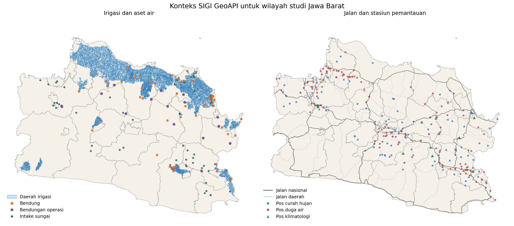
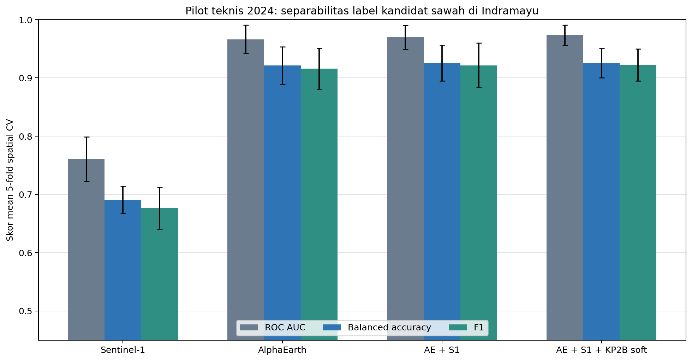

Start with a historical screen, not a claim about ownership or zoning.
The 2017 view shows the analytical object at its native geographic logic: a continuous probability surface. It is a starting point for inspection, not a verdict on a field.
A West Java case study in using historical remote-sensing evidence while making the boundary between observation, scenario, and speculation visible.
Planning for food security in West Java is an evidence-integration problem before it is a mapping problem. Land, crop, irrigation, policy, and local administrative data sit in different systems, use different dates, and answer different questions. A detailed map can make those mismatches disappear from view—and create more certainty than the data deserves.
This study asked a narrower question: what can a 10 m historical paddy-probability screen legitimately tell a planning team? The answer had to be useful for investigation while staying honest about what was not measured.
The map below is intentionally shown before any administrative aggregation. It is a model-derived physical-paddy probability screening surface, not raw satellite imagery, a parcel boundary, an LP2B/KP2B designation, planted area, harvested area, production, or a legal map.
Each frame is a different claim. The visual, source note, and caveat move together so that a high-resolution image is never mistaken for a high-confidence forecast.

This is the baseline: a model-derived physical-paddy probability screen, not a parcel map.
Source & scope: published here as a selected, screen-ready derivative from the project workflow. The source grid is 10 m; display images are resampled only for viewing. No government source bundles, tokens, or raw atlas package are redistributed.
The 2017 view shows the analytical object at its native geographic logic: a continuous probability surface. It is a starting point for inspection, not a verdict on a field.
The 2024 screen can direct attention to places that deserve a closer look. It cannot distinguish every change in crop cycle, cloud-free observation, model response, or land use without independent reference data.
This district frame makes patterns easier to inspect. It still does not identify a farm boundary, prove active planting, or translate directly into harvest or rice tonnage.
Spatial hindcasting did not beat persistence, and there is no independent multi-year change reference. The responsible output is an explicit boundary: historical screening is available; raw 2034 pixels are not.



The historical deliverable is useful because it is legible at two scales: a full West Java frame for regional patterns, and detailed local frames for follow-up. It is deliberately not presented as a count of fields, a production estimate, or a final inventory of protected agricultural land.
The Indramayu methodological pilot also showed that AlphaEarth features can distinguish the project’s user-processed candidate frame better than Sentinel-1 alone. That is a pilot discrimination result, not a statewide accuracy claim.

| Boundary | What it means in practice |
|---|---|
| Screening is not ground truth | The historical image is provisional scientific screening. It is not an official or legal map, and it does not replace field checking or an authorised LP2B/KP2B inventory. |
| Historical difference is not conversion | A change between annual probability screens can reflect land dynamics, crop cycles, observation conditions, or model response. Independent multitemporal reference data are needed to make a conversion claim. |
| Pilot performance has a narrow scope | The benchmark measures discrimination of a user-processed candidate frame in Indramayu. It should not be recast as province-wide classification accuracy. |
| Raw 2034 pixels are withheld | The best aggregate trend hindcast had a 12,967 ha MAE, worse than a 9,259 ha persistence baseline. With no independent change reference, publishing a spatial allocation would overstate what the study knows. |
| Food availability is broader than paddy area | Any three-district aggregate sensitivity work excludes trade, stocks, prices, access, diet, and household distribution. It is not a complete food-security forecast. |
Useful for finding places to inspect across West Java, provided it stays labelled as a model-derived paddy-probability surface.
Useful for sensitivity discussion in Indramayu, Karawang, and Subang, but not for locating future change on a map.
Not published until independent validation can show that the spatial model adds value beyond persistence.
The study does not end with a single, sweeping answer about West Java’s future. It gives planners a more disciplined starting point: an auditable historical signal, a clear request for validation data, and a shared language for distinguishing evidence from plausible narrative.
The point was not to make a sharper forecast. It was to make the boundary between evidence and speculation visible.
Project evidence draws on AlphaEarth Foundations and Sentinel-1 for the methodological pilot; SIGI/PUPR, GISTARU, BIG, BPS, and Kementan/SISCROP as contextual government sources where applicable. Portal availability is not treated as a blanket reuse licence; only selected derivative figures and explanatory assets are published here.
Portfolio version: August 2026. This page is a methodological case study, not an official agricultural inventory, land-rights record, or operational forecast.